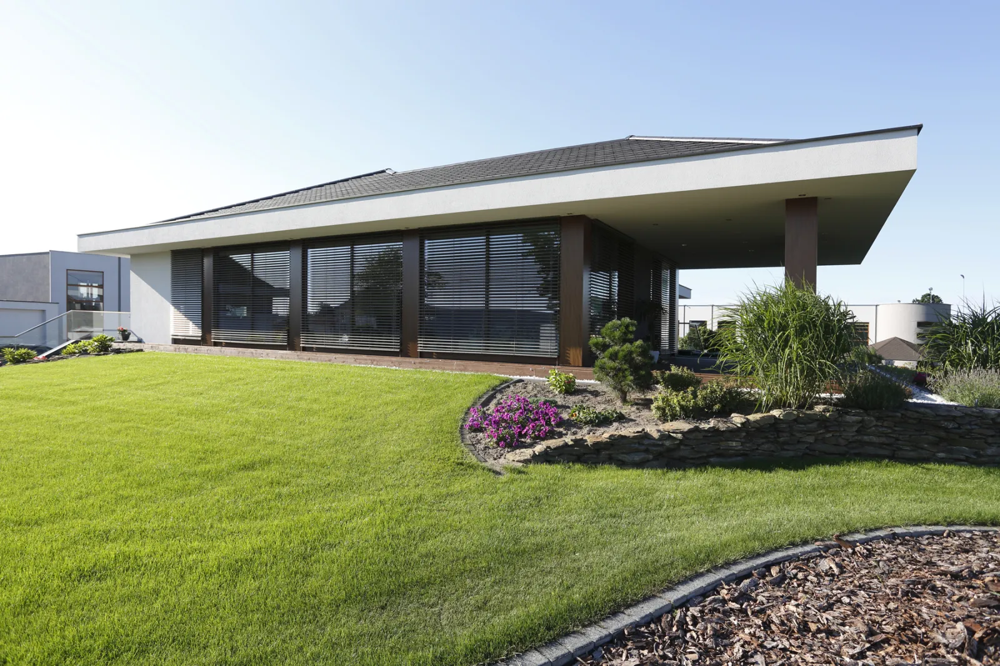
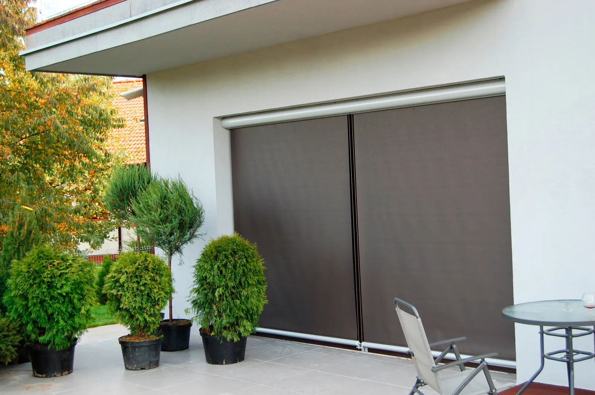
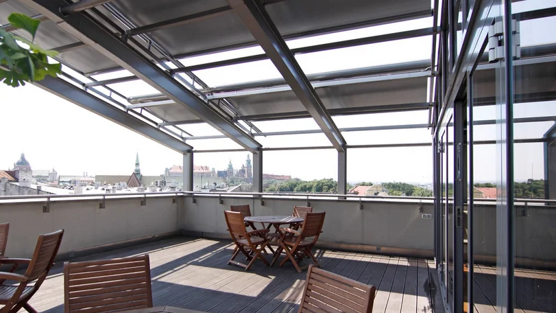
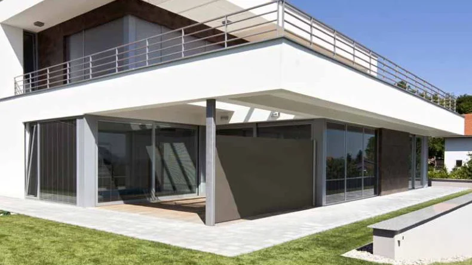
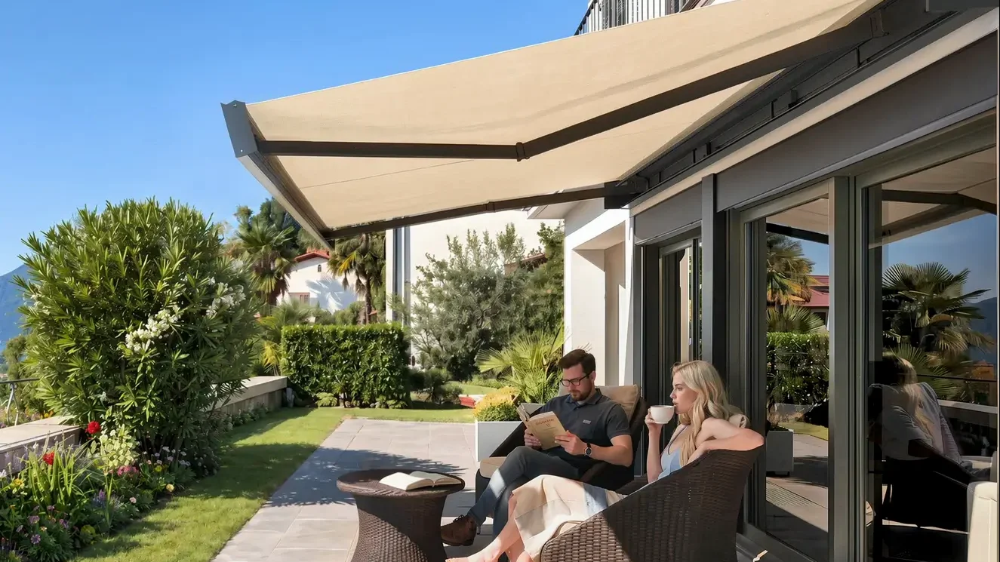
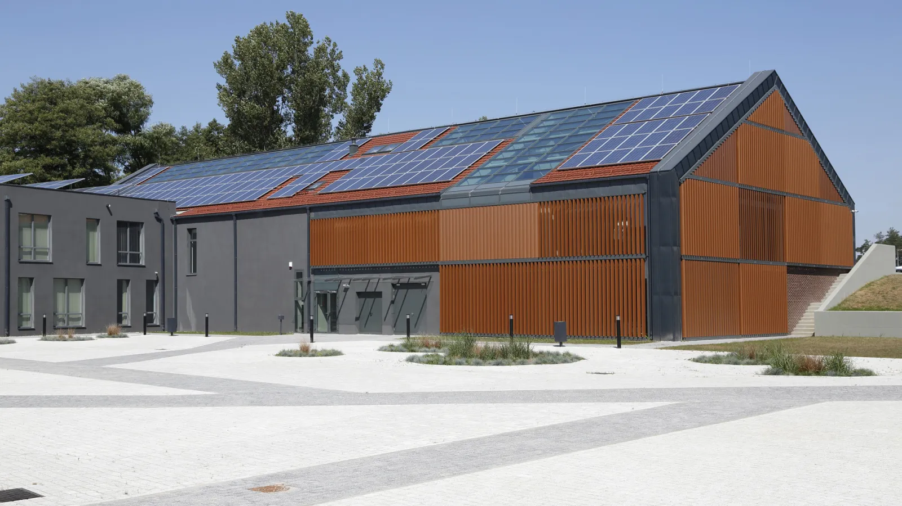

Šest vrsta vanjskih sjenila iz SELT by Aluprof programa: od žaluzina i rolo sjenila do tendi i brisoleja. Odaberite kategoriju prema tome što zasjenjujete, a pomoći ćemo vam odabrati model.

Vanjske i unutarnje žaluzine za prozore, pročelja i staklene plohe.
Pogledaj modele →
Tkanina u kaseti za pročelja i prozore, ZiiiP sustav drži je napetom.
Pogledaj modele →
Električna sjenila za staklene krovove i zimske vrtove.
Pogledaj modele →
Tkanina se izvlači sa zida do stupa i zasjenjuje bok terase.
Pogledaj modele →
Tende s kasetom ili bez nje za terase, balkone i prozore do 7 m.
Pogledaj modele →
Aluminijske lamele ispred staklenih ploha, pokretne ili fiksne.
Pogledaj modele →